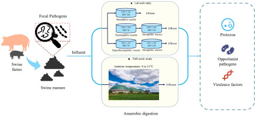

Overview
This study systematically evaluated the presence and fate of zoonotic protozoa (Cryptosporidium and Giardia), twelve opportunistic bacterial pathogens, and associated virulence factors in both full-scale and lab-scale anaerobic digestion (AD) systems processing swine manure in China. Using quantitative PCR, nested PCR with gp60-based phylogenetic analysis, virulence factor profiling, and metagenome-assembled genome (MAG) reconstruction, the research highlights the persistent detection of high-abundance zoonotic Cryptosporidium parvum and the superior efficacy of hyperthermophilic–mesophilic AD regimes in reducing microbial risks.
Introduction
Swine manure serves as a significant reservoir of enteric pathogens, posing substantial health and environmental risks when inadequately treated. Cryptosporidium and Giardia are ubiquitous zoonotic protozoan parasites commonly found in livestock manure and recognized as major agents of waterborne outbreaks worldwide. Cryptosporidium parvum oocysts can be shed at concentrations exceeding 107 oocysts per gram of feces, creating a substantial risk of contaminating surface and groundwater following manure application or runoff.
Furthermore, opportunistic bacterial pathogens such as Escherichia coli, Salmonella spp., Clostridium perfringens, and Enterococcus spp. are prevalent in swine manure. When manure is released into the environment or applied to agricultural fields without adequate treatment, these pathogens can facilitate disease transmission and promote the spread of antibiotic resistance genes carried by bacterial pathogens.
Integrated molecular profiling of virulence factors (VFs) in swine manure treatment systems remains scarce, yet these genes provide genome-level information on pathogen-associated functional potential beyond organism detection alone. This study addresses the urgent need to understand how virulence determinants respond to advanced anaerobic digestion processes and supports the development of evidence-based sanitation strategies within the One Health framework.
Study Design and Methodology
The study investigated three full-scale AD systems treating swine waste in China, alongside controlled lab-scale reactors under intensified thermal regimes:
- Full-scale systems: Two located in Beijing (BJ1, BJ2) and one in Hebei (HB), with reactor temperatures ranging from 8 °C to 31 °C and varying hydraulic retention times and substrate compositions.
- Lab-scale systems: Three parallel continuous stirred-tank reactors treating homogenized swine manure: a single-stage mesophilic system (37 °C ± 1 °C, HRT 30 d), a two-stage thermophilic–mesophilic system (55 °C ± 1 °C, HRT 5 d → 37 °C ± 1 °C, HRT 25 d), and a two-stage hyperthermophilic–mesophilic system (70 °C ± 1 °C, HRT 5 d → 37 °C ± 1 °C, HRT 25 d).
DNA was extracted using the FastDNA SPIN Kit for Soil. Cryptosporidium and Giardia were quantified by TaqMan qPCR targeting the 18S rRNA and β-giardin genes, respectively. Cryptosporidium species were identified by nested PCR of the gp60 gene followed by Sanger sequencing and maximum-likelihood phylogenetic analysis. Twelve opportunistic pathogens were quantified by SYBR Green qPCR targeting species-specific gene markers. Metagenomic sequencing was performed on the Illumina NovaSeq 6000 platform, and virulence factors were profiled against the Virulence Factor Database (VFDB) using the ARGs-OAP pipeline. MAGs were reconstructed using metaWRAP, GTDB-Tk, and VFanalyzer.
Key Findings
Occurrence of Cryptosporidium and Giardia
Cryptosporidium was detected at high levels in effluents from all full-scale AD systems, indicating incomplete reduction and potential environmental release:
- BJ1: 2.79 × 107 gene copies/g dry weight
- BJ2: 3.21 × 109 gene copies/g dry weight
- HB: 6.12 × 109 gene copies/g dry weight
- Giardia was detected only in BJ1 (3.29 × 106) and BJ2 (2.38 × 108 copies/g dry weight); it was not detected in any lab-scale samples
- In lab-scale AD, Cryptosporidium showed a temperature-dependent decrease: hyperthermophilic pretreatment at 70 °C reduced abundance to 1.59 × 105 copies/g (P < 0.001), and the combined hyperthermophilic–mesophilic condition lowered it further to 1.47 × 105 copies/g, corresponding to an approximately 68–71% reduction relative to the influent
Opportunistic Bacterial Pathogens
Twelve opportunistic pathogens were quantified across full-scale and lab-scale systems, revealing stark differences in treatment efficacy:
- Full-scale persistence: BJ2 showed the highest absolute abundance, with C. perfringens reaching 1.40 × 1014 copies/g, Enterococcus spp. at 8.92 × 1011, Salmonella spp. at 4.01 × 109, and E. coli at 1.48 × 109 copies/g dry weight
- Lab-scale reduction: The hyperthermophilic–mesophilic (70 °C–37 °C) treatment completely inactivated 11 of 12 pathogens by qPCR; only Enterococcus spp. remained detectable (1.3 × 108 copies/g)
- Overall pathogen abundance in lab-scale systems was reduced from 3.40 × 108 to 1.21 × 108 copies/g dry weight under hyperthermophilic–mesophilic conditions (P < 0.001)
- Gram-positive, stress-tolerant lineages such as Clostridium and Enterococcus exhibited greater persistence than Gram-negative pathogens under thermal stress
Virulence Factor Dynamics
Virulence factor (VF) abundance and functional composition were systematically analyzed across lab-scale influent and effluent samples:
- The influent showed a mean total VF abundance of 5.24 copies/cell, which was sharply reduced under all treatment conditions
- The most significant reduction occurred under hyperthermophilic–mesophilic conditions, declining to 2.35 copies/cell (P < 0.001)
- Immune modulation and adherence genes were the most abundant functional classes in the influent (1.46 and 1.42 copies/cell) and were significantly reduced, particularly under 70 °C–37 °C
- Exotoxin genes exhibited the highest reduction, decreasing by approximately 93.6% (from 0.0070 to 0.00045 copies/cell) under hyperthermophilic–mesophilic treatment
- Hemolysin, colicin, cereulide, cytolysin, and theta toxin genes were detected in the influent and sharply reduced with temperature; thermal treatment led to near-complete elimination of several toxin genes
Metagenome-Assembled Genomes
Genome-resolved metagenomic analysis provided taxonomic and virulence context for pathogen attenuation:
- 14 high- and middle-quality MAGs were recovered, representing Acinetobacter, Chlamydia, Corynebacterium, Clostridium, Streptococcus, Enterococcus, Escherichia, and Pseudomonas
- bin.25 (Streptococcus) was most abundant in the influent (140.6 genome copies/million reads), followed by bin.21 (Corynebacterium, 127.4) and bin.14 (Clostridium, 74.5)
- Under AD treatment, MAG relative abundance was markedly reduced; bin.21 dropped by over 93% under the 70 °C–37 °C regime
- Several bins (e.g., bin.794, bin.778, bin.675, bin.323) were not detectable post-treatment, indicating complete or near-complete suppression
- MAGs encoding cereulide (bin.742) and cytolysin A (bin.323)—virulence factors associated with severe clinical outcomes—were absent in the final effluents of hyperthermophilic treatments
Implications and Significance
This research has critical implications for environmental management and public health:
- Public Health Risk: Persistent detection of high-abundance zoonotic C. parvum subtype IIaA17G4R1 and multiple opportunistic pathogens in full-scale effluents underscores the risk of environmental spread and zoonotic transmission through inadequately treated manure
- Treatment Efficacy: The hyperthermophilic–mesophilic (70 °C–37 °C) regime achieved the most substantial reduction across all biological risk indicators, supporting its potential as an intensified hygienization pre-treatment for manure
- One Health Approach: Findings align with the WHO "multiple barrier" approach and support the One Health framework by bridging human, animal, and environmental health to interrupt zoonotic transmission cycles
- Genome-Resolved Evidence: MAG analysis provided genome-level confirmation of pathogen attenuation and virulence gene reduction, reinforcing the biosafety-enhancing capacity of optimized thermal AD
- Policy Implications: Results support the development of evidence-based sanitation strategies and safer manure management practices, particularly in livestock-dense regions where digestate is frequently reused as fertilizer
Conclusion
This study systematically evaluated the presence and fate of key pathogenic protozoa, opportunistic bacterial pathogens, and virulence factors in swine manure anaerobic digestion systems. The persistent detection of high-abundance zoonotic Cryptosporidium parvum subtype IIaA17G4R1, along with several genetically related subtypes previously reported in both human and animal hosts, highlights the potential risk of environmental spread from untreated or inadequately treated manure. Importantly, controlled lab-scale two-stage AD, especially under hyperthermophilic–mesophilic conditions, exhibited significant reductions in pathogen loads and virulence gene abundance. These findings highlight the urgent need to integrate intensified thermal digestion strategies into manure treatment practices to ensure biological safety and enhance microbial risk-reduction targets recommended by international health authorities.